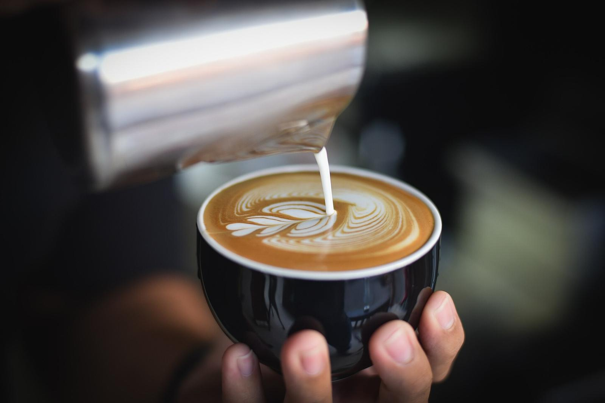
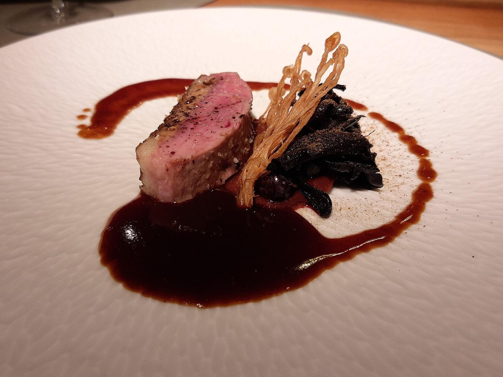

Une petite salle, un grand comptoir, une ardoise qui change tous les jours. Le matin, un café qui réveille ; le midi, un plat du jour ; le soir, des assiettes à partager et des vins de vignerons.


Velouté de potimarron, noisettes grillées
8Joue de bœuf confite, purée au beurre noisette
22Tarte fine aux pommes, crème crue
9